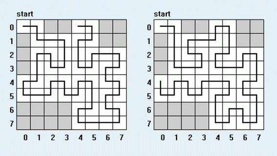

给定一个边长为2n棋盘，其中有M个格子是坏掉的。一个蚂蚁要从棋盘的左上角开始，遍历整个棋盘。每个点必须且仅允许走一遍。蚂蚁走的时候把棋盘分成了四个2n-1 个小棋盘，蚂蚁总是走完其中的一个后再继续走下一个，也就是说，在进入一个小棋盘后，它必须把其中的所有点遍历以后才能走其他的点。

对于上下左右四个边界，寻找边界上的一个格子，使得该格可以作为蚂蚁访问路线的终点
其中 N <= 30 , M <= 50
| F.A.Qs | Home | Discuss | ProblemSet | Status | Ranklist | Contest | 入门OJ | ModifyUser Xeonacid | Logout | 捐赠本站 |
|---|